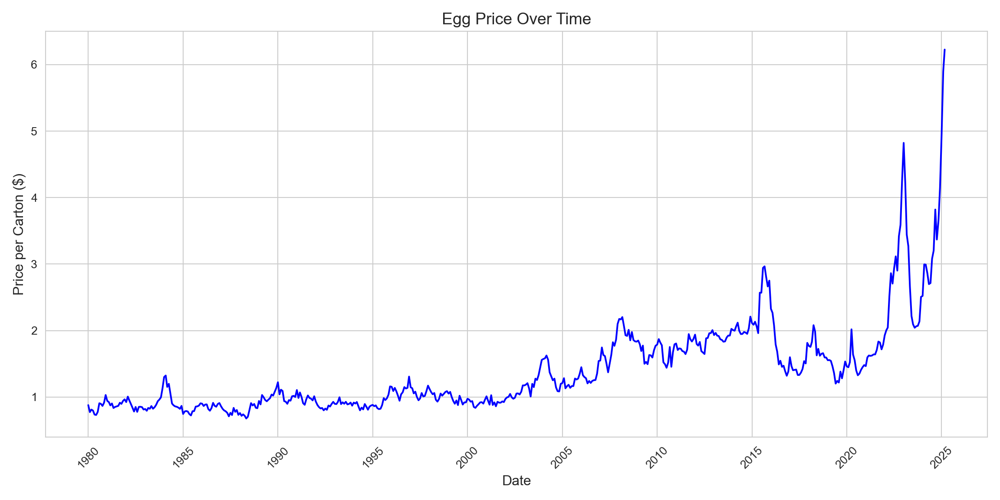
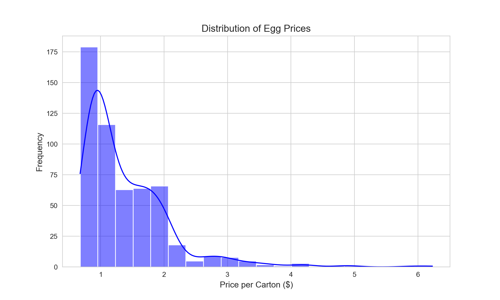
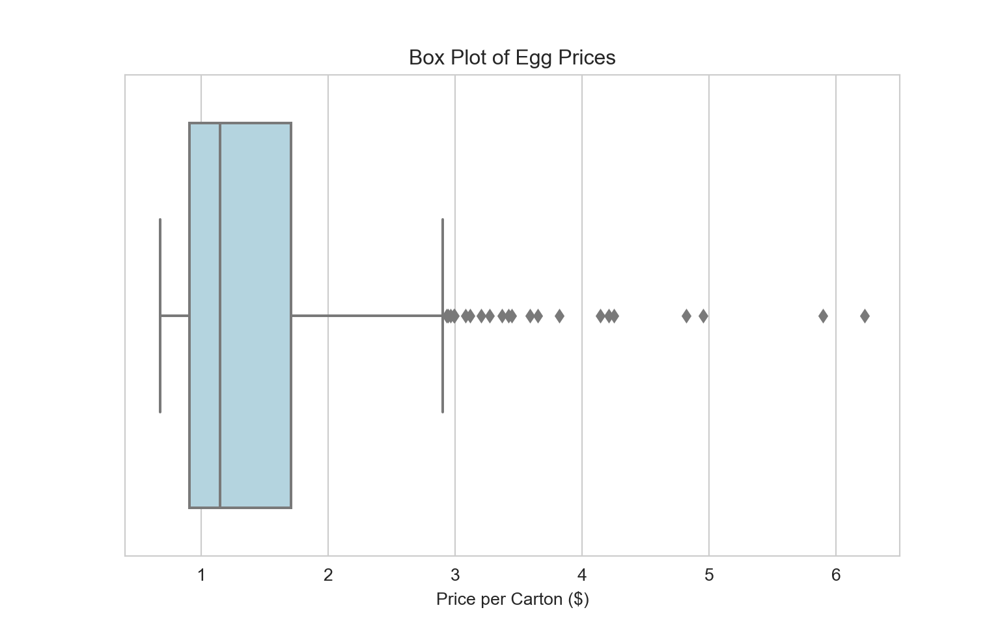
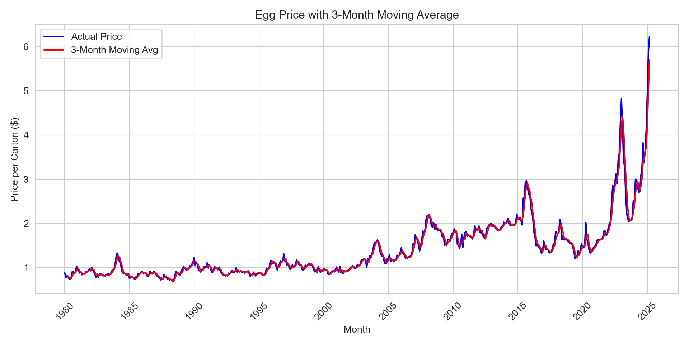

Eggs are a breakfast staple in many households, whether scrambled, fried, or used in baking. They’ve been a reliable and affordable source of protein for decades, but if you’ve noticed prices climbing over the years, you’re not alone. A deep dive into historical egg prices reveals a steady increase, punctuated by sharp spikes—especially after 2020. Let’s break down the trends, examine price distribution, and consider what the future holds.
In this 4-part series, we’ll break down the trends, examine price distribution, and consider what the future holds for egg prices. Whether you’re a consumer feeling the pinch at the checkout or just curious about what’s driving these price surges, we’ve got the insights you’re looking for. Let’s crack into the details!
The dataset we’re working with for this part of the analysis covers monthly egg price data, starting from 1980. With this data, we can uncover patterns and fluctuations over time, helping us understand how egg prices have evolved and what factors might be driving these changes.
To better understand the changes in egg prices, here are some key summary statistics:
## | | index | Price |
## |---:|:--------|--------:|
## | 0 | count | 543.00 |
## | 1 | mean | 1.40 |
## | 2 | std | 0.70 |
## | 3 | min | 0.68 |
## | 4 | 25% | 0.91 |
## | 5 | 50% | 1.15 |
## | 6 | 75% | 1.71 |
## | 7 | max | 6.23 |These statistics reveal that most egg prices cluster around $1.00–$1.50, with occasional extreme values pushing prices much higher.
Looking at long-term price data, egg prices remained relatively stable for decades before experiencing dramatic fluctuations in recent years.

The exact causes of these price surges aren’t immediately clear from the data alone. However, historical patterns suggest that factors like avian flu outbreaks and rising production costs have contributed to past fluctuations. What’s evident from the data is that price volatility has increased significantly in recent years.
To understand how often extreme price hikes occur, I analyzed the distribution of egg prices over time. The data shows a right-skewed distribution, meaning that while prices have historically been low, recent years have seen frequent spikes.

Most prices in the past ranged between $1.00–$1.50 per dozen, but recent spikes have pushed prices beyond $3.00–$5.00 per dozen, and in some cases, even higher. This suggests that while extreme prices weren’t common in the past, they are now appearing more frequently.
A box plot of historical egg prices highlights growing price variability:

The data suggests that these high prices, once considered extreme, may now be part of a new pricing norm.
To better identify the underlying trends, a 3-month moving average was applied to the historical price data. This smooths out short-term fluctuations and provides a clearer picture of the long-term trend.

Key takeaways from the moving average:
Long-Term Upward Trend 📈
Volatility & Sharp Spikes ⚡
Recent Price Surge (Post-2020) 🚀
Moving Average (Red Line) Smooths Out Noise
Will prices come back down, or are expensive eggs the new reality? While short-term price swings are common, long-term trends indicate that egg prices may never return to pre-2020 levels. Inflationary pressures and production costs suggest that even as volatility stabilizes, eggs are unlikely to be as cheap as they once were.
For those looking to save:
Buying in bulk—flats of eggs (30-count trays) are often cheaper per egg than smaller cartons.
Shopping at warehouse stores or local farms—some farms offer direct-to-consumer pricing that can be more stable than grocery store prices.
Egg prices aren’t just rising—they’re becoming more unpredictable. Whether this is a temporary trend or the new normal remains to be seen, but one thing is certain: the days of consistently cheap eggs may be behind us.
As we move forward, forecasting models can help us better understand where egg prices might be headed. By applying time series techniques, we can predict future price trends and gain a clearer picture of what to expect in the coming months or years. Stay tuned as we dive deeper into these models and explore what the future may hold for egg prices!